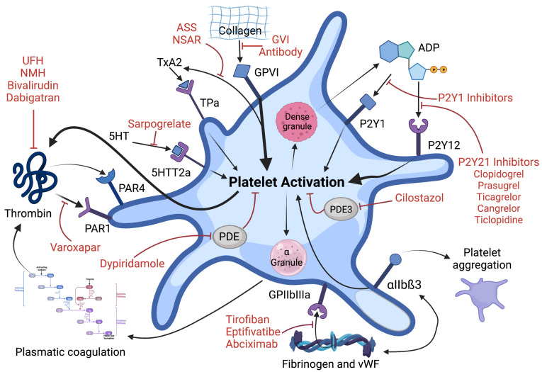

藥物
Antiplatelet ｜ 抗血小板藥 · Antiplatelet Agents
筆記更新 2026-07-27·整理狀態：可用
其他名稱 14
Antiplatelet · 抗血小板藥 · Antiplatelet agent · DAPT · 雙重抗血小板治療 · Aspirin · Clopidogrel · Prasugrel · Ticagrelor · Cangrelor · P2Y12 inhibitor · GP IIb/IIIa inhibitor · Dipyridamole · Cilostazol
機轉 Mechanism
四類藥擋在同一條活化路徑的四個不同關卡：aspirin 擋 COX-1 生成 TXA2、P2Y12 抑制劑擋 ADP 訊號、GP IIb-IIIa 抑制劑擋最終的纖維蛋白原架橋，PDE 抑制劑則從細胞內拉高 cAMP 壓抑活化。

血小板活化與藥物靶點總圖：collagen–GPVI 黏附後，TXA₂ 與 ADP–P2Y₁₂ 放大訊號，最終使 GPIIb/IIIa（αIIbβ3）活化、用 fibrinogen／vWF 架橋聚集。ASS 即 aspirin；另可直接看到 P2Y₁₂ inhibitors、GPIIb/IIIa inhibitors 與 PDE3 inhibitor cilostazol 的阻斷位置。Source: Raber et al., Int J Mol Sci 2023, Figure 2（CC BY 4.0）。
抗栓三層：抗血小板 vs 抗凝 vs 溶栓
| 層 |
打什麼 |
代表藥 |
在 ACS 的角色 |
| 抗血小板 |
血小板 |
aspirin（COX-1）；clopidogrel／prasugrel／ticagrelor／cangrelor（P2Y12）；abciximab／eptifibatide／tirofiban（GP IIb-IIIa） |
全程都要，且延續到出院後長期 |
| 抗凝血 |
凝血因子 |
UFH 與 LMWH（間接抗 IIa／Xa，見 Heparin↗）；bivalirudin（直接抗 IIa）；fondaparinux（抗 Xa）；Warfarin↗、DOAC |
只在急性期／術中用，不是長期用藥（除非另有抗凝適應症） |
| 溶栓 |
已形成的纖維蛋白 |
alteplase、tenecteplase（活化 plasminogen，見 Fibrinolytics↗） |
只在無法及時 PCI 的 STEMI |
分類與各藥對照
① COX-1 抑制：aspirin
| 項目 |
內容 |
| 標的與下游 |
COX-1（乙醯化，不可逆）→ TXA2 ↓ → 血小板聚集與血管收縮 ↓ |
| 劑量天花板 |
約 160 mg 即幾乎完全抑制血小板 COX-1；再加只增加腸胃道出血，不增加抗血小板效果 |
| 起效／恢復 |
嚼服非腸溶劑型 約 20–30 分鐘（腸溶劑型會延遲，急性期不可用腸溶）；停藥後靠新生血小板，5–7 天才恢復到可手術的程度 |
② P2Y12 抑制：五個維度分開背
兩條通則先記：thienopyridine（clopidogrel、prasugrel）都是前驅藥且不可逆，非 thienopyridine（ticagrelor、cangrelor）直接有活性且可逆；只有 clopidogrel 卡在 CYP2C19（只有它需要兩步氧化）。
| 藥 |
前驅藥？ |
可逆？ |
途徑 |
受 CYP2C19 影響？ |
起效 |
負荷／維持 |
| Clopidogrel |
是（thienopyridine，需兩步 CYP 活化） |
不可逆 |
口服 |
是——最大弱點 |
慢（600 mg 約 2 小時） |
600 mg／75 mg QD |
| Prasugrel |
是（thienopyridine，只需一步 CYP，效率高且穩定） |
不可逆 |
口服 |
否 |
快（約 30 分鐘） |
60 mg／10 mg QD |
| Ticagrelor |
否——直接有活性 |
可逆（結合在與 ADP 不同的位點，非競爭性） |
口服 |
否 |
快（約 30 分鐘） |
180 mg／90 mg BID |
| Cangrelor |
否 |
可逆 |
靜脈 |
否 |
數分鐘（最快） |
30 µg/kg IV bolus ＋ 4 µg/kg/min 輸注（至少 2 小時或整個 PCI 期間，取較長者） |
③ GP IIb-IIIa 抑制：最終共同路徑
| 藥 |
化學本質 |
可逆？ |
清除 |
特別注意 |
| Abciximab |
單株抗體 Fab 片段（嵌合型） |
解離慢，作用最久 |
非腎排除 |
血漿半衰期很短但與血小板結合可維持數天；嚴重血小板低下發生率最高；專一性最低。已於 2019 年因製造問題全球下市（非安全性理由），但仍是分類上的代表藥 |
| Eptifibatide |
環狀七胜肽（KGD 序列） |
可逆 |
腎排除 |
腎功能不良需減輸注速率；透析病人禁用 |
| Tirofiban |
非胜肽小分子（RGD 模擬） |
可逆 |
腎排除 |
腎功能不良需減輸注速率 |
劑量：Eptifibatide：180 µg/kg bolus ＋ 2 µg/kg/min；PCI 時 10 分鐘後再給第二次 180 µg/kg bolus；CrCl ＜50 輸注減半為 1 µg/kg/min。Tirofiban：25 µg/kg bolus（3 分鐘內）＋ 0.15 µg/kg/min；CrCl ≤60 輸注減半為 0.075 µg/kg/min。
④ PDE 抑制：不是冠心症的主力
| 藥 |
機轉 |
主要用途 |
關鍵禁忌／陷阱 |
| Dipyridamole |
PDE 抑制 ＋ 阻斷腺苷再回收 → 血小板內 cAMP ↑ |
與低劑量 aspirin 併用，是次級中風預防的組合之一；核醫心肌灌流造影的藥物負荷劑 |
同時是強力冠狀動脈血管擴張劑 → 冠狀動脈竊血（coronary steal）；慢性穩定型心絞痛不建議常規使用 |
| Cilostazol |
選擇性 PDE3 抑制 → cAMP ↑（抗血小板 ＋ 動脈擴張） |
間歇性跛行的第一線藥物（增加行走距離） |
任何程度的心衰竭皆為禁忌——PDE3 抑制劑類效應已證實增加心衰竭病人死亡率 |
適應症 Indications
| 適應症 |
角色 |
| ACS（STEMI／NSTEMI／UA） |
第一線且必用：aspirin ＋ P2Y12 抑制劑 |
| PCI↗ 術前／術中／術後 |
第一線；GP IIb-IIIa 抑制劑為術中救援 |
| 慢性冠心症（見 CAD） |
aspirin 單方長期；改善預後 |
| 缺血性 Stroke↗ 或 TIA 的次級預防 |
aspirin、clopidogrel，或 aspirin ＋ 緩釋 dipyridamole |
| 周邊動脈疾病的間歇性跛行 |
cilostazol（緩解症狀＋增加行走距離） |
| 不該用的兩個場合 |
一級預防（無心血管疾病者）不常規建議——出血風險常抵銷獲益；Atrial fibrillation 的中風預防不可用抗血小板取代抗凝（見 DOAC） |
劑量與用法
急性冠心症的負荷劑量
| 藥 |
負荷劑量 |
維持劑量 |
條件與陷阱 |
| Aspirin |
嚼服 162–325 mg（非腸溶劑型；台灣臨床常用 300 mg） |
75–100 mg QD |
沒有「高劑量更好」這回事；600 mg 不是任何指引的建議劑量 |
| Ticagrelor |
180 mg |
90 mg BID |
併用的 aspirin 維持劑量必須 ≤100 mg；超過會降低 ticagrelor 效果 |
| Prasugrel |
60 mg |
10 mg QD（≥75 歲或體重 ＜60 kg → 5 mg QD） |
中風／TIA 病史為絕對禁忌；建議在知道冠脈解剖之後才給 |
| Clopidogrel |
PCI：600 mg（起效比 300 mg 快，是 PCI 的標準負荷量）｜保守／藥物治療策略的 NSTE-ACS：300 mg（CURE 的用法）｜合併溶栓：見下列年齡分水嶺 |
75 mg QD |
三種情境三個數字：PCI 600、保守 300、溶栓 300（＞75 歲不給） |
| Clopidogrel（合併溶栓的 STEMI） |
≤75 歲：300 mg；＞75 歲：不給負荷劑量，直接 75 mg QD |
75 mg QD |
分水嶺是「超過 75 歲」，不是「滿 75 歲」——剛好 75 歲仍要給 300 mg；＞75 歲給負荷量會增加顱內出血 |
P2Y12 抑制劑的選擇順序
| 情境 |
選擇 |
| ACS 要做 PCI↗ |
ticagrelor 或 prasugrel 優先於 clopidogrel |
| 需要合併口服抗凝、或高出血風險、或無法負擔強效藥 |
clopidogrel |
| 合併溶栓的 STEMI |
只能用 clopidogrel——prasugrel 與 ticagrelor 在此無足夠證據 |
| NSTE-ACS 的上游給藥（pretreatment） |
兩份指引真實分歧，引用時要標明依據哪一份：2023 ESC 對早期侵入策略 Class III 反對常規上游給藥（獲益未證實，且若最後要開 CABG 反而被迫等藥效退去）；2025 ACC/AHA 在導管預計 ＞24 小時後才做時列為「可考慮」給 clopidogrel 或 ticagrelor |
DAPT 療程長度
| 情境 |
療程 |
| ACS（含 STEMI 與 NSTE-ACS）預設 |
至少 12 個月 DAPT（無高出血風險者；2025 ACC/AHA 與 2023 ESC 一致） |
| 高出血風險 |
可縮短：1–3 個月後改為單方，單方優先選 P2Y12 抑制劑而非 aspirin；已耐受 ticagrelor 的 DAPT，PCI 後 ≥1 個月即可轉為 ticagrelor 單方 |
| 穩定型冠心症 ＋ 第二代（含）以後的藥物塗層支架 |
6 個月為傳統標準寫法——決定長度的是支架世代 ＋ 臨床情境兩件事，同一支支架換成急性冠心症就回到 12 個月 |
圍手術期停藥
| 藥 |
建議術前停藥天數 |
備註 |
| Aspirin |
多數情況不停（尤其有支架者） |
只有出血後果毀滅性的手術（顱內、脊髓、眼球後房）才停 7–10 天 |
| Clopidogrel |
5 天 |
|
| Ticagrelor |
3–5 天（ESC 寫 3、美國舊版寫 5） |
可逆型，退效比 thienopyridine 快；緊急 CABG 時實務上以病情優先 |
| Prasugrel |
7 天 |
最強、最不可逆，停最久 |
| Cangrelor |
1 小時（停輸注即可） |
因此可作為手術前的橋接 |
| Eptifibatide／tirofiban |
術前 2–4 小時停輸注 |
半衰期短，血小板功能約 4–8 小時恢復 |
副作用 Adverse Effects
| 副作用 |
頻率 |
能從機轉推嗎 |
對應主訴 |
| 出血（各部位，全類共有） |
常見 |
可以 |
黑便、血尿、瘀斑、貧血 |
| 腸胃道出血／消化性潰瘍 |
aspirin 最典型 |
可以——COX-1 也負責胃黏膜保護性前列腺素 |
上腹痛、黑便；見 Peptic ulcer disease↗ |
| 顱內出血 |
少見但致命 |
可以 |
意識改變、頭痛；prasugrel 在中風病史者風險最高 |
| 呼吸困難（約 14%）＋ 心室停頓／心搏過緩（多在第一週） |
ticagrelor |
可以（腺苷機轉） |
喘、頭暈、暈厥 |
| 血小板低下 |
GP IIb-IIIa 抑制劑（abciximab 最高） |
部分可以 |
出血、紫斑 |
| 頭痛、腹瀉、心悸 |
cilostazol 常見（dipyridamole 也常頭痛） |
可以（血管擴張＋PDE3 正性肌力／變時作用） |
頭痛、心悸 |
| 血尿酸與肌酸酐上升 |
ticagrelor |
部分 |
痛風發作 |
| TTP |
clopidogrel／ticlopidine，極罕見 |
否 |
發燒、神經症狀、溶血、血小板低下 |
交互作用與監測
| 併用什麼 |
會發生什麼 |
怎麼處理 |
| NSAID（ibuprofen 等非選擇性）＋ aspirin |
競爭同一個 COX-1 結合位。NSAID 是可逆結合，佔住位置後 aspirin 來不及乙醯化就被代謝掉（aspirin 半衰期很短）→ 抗血小板效果被抵銷 |
先吃 aspirin。FDA 建議：速放型 aspirin 服用後至少 30 分鐘才吃 ibuprofen，或 ibuprofen 服用後至少 8 小時才吃 aspirin。acetaminophen 不干擾，是首選替代止痛藥 |
| NSAID／COX-2 抑制劑在 ACS 期間 |
增加死亡、再梗塞、心衰與心肌破裂 |
停用（aspirin 除外） |
| Omeprazole／esomeprazole ＋ clopidogrel |
強效 CYP2C19 抑制 → clopidogrel 活化不足 |
改用 pantoprazole（對 CYP2C19 影響最小）。爭議標記：COGENT 未顯示臨床事件增加，真實臨床意義仍有辯論 |
| 強效 CYP3A4 抑制劑／誘導劑 ＋ ticagrelor |
抑制劑（ketoconazole、clarithromycin、ritonavir）→ 濃度大幅上升、出血；誘導劑（rifampin、carbamazepine、phenytoin）→ 濃度下降、抗血小板失效 |
抑制劑禁止併用；誘導劑避免併用 |
| Aspirin ＞100 mg ＋ ticagrelor |
降低 ticagrelor 的效果（PLATO 中北美族群結果反轉的可能解釋） |
aspirin 維持劑量壓在 75–100 mg |
| 抗血小板 ＋ 抗凝（DOAC、Warfarin↗） |
出血風險相加 |
有明確適應症才併用；盡量縮短三聯期間；加 PPI |
| 嗎啡 ＋ 口服 P2Y12 抑制劑 |
抑制胃排空 → 延遲吸收與起效 |
硝酸鹽無效時才用嗎啡；必要時考慮靜脈的 cangrelor |
要追蹤的指標：CBC（血紅素與血小板——用 GP IIb-IIIa 抑制劑時要在用藥前、2–6 小時、之後每日驗）、腎功能（eptifibatide／tirofiban 需依此調量）、出血徵象（黑便、血尿、瘀斑）
特殊族群
| 族群 |
注意事項 |
| 孕婦／哺乳 |
低劑量 aspirin 用於子癲前症預防是安全且有適應症的；P2Y12 抑制劑資料極少，非必要不用 |
| 老年（高齡） |
三個獨立的年齡陷阱，注意門檻不一樣：① prasugrel 一般不建議，必須用時維持劑量降到 5 mg（門檻 ≥75 歲）；② 合併溶栓時 clopidogrel 不給負荷劑量（門檻 ＞75 歲——剛好 75 歲仍要給 300 mg）；③ enoxaparin 不給 IV bolus 且改 0.75 mg/kg q12h（門檻 ≥75 歲） |
| 體重 ＜60 kg |
prasugrel 維持劑量 5 mg |
| 腎衰竭／透析 |
出血與缺血風險同時升高。eptifibatide 與 tirofiban 需依腎功能減輸注速率；eptifibatide 在透析病人禁用；abciximab 非腎排除故不需調整 |
| 肝功能不良 |
ticagrelor 在嚴重肝功能不全禁用（依賴肝臟代謝且出血風險高） |
| 兒童 |
不用 aspirin 退燒——Reye syndrome。例外是川崎病與特定心臟疾病，有明確適應症時使用 |
| 氣喘／鼻息肉 |
少數人有 aspirin-exacerbated respiratory disease（aspirin ＋ 氣喘 ＋ 鼻息肉三聯）；用 dipyridamole 做藥物負荷時也要留意支氣管痙攣 |
禁忌與陷阱
相關連結
- ACS／CAD／PCI↗ — 急性期的完整分流與處置流程、慢性冠心症的「改善預後 vs 緩解症狀」脈絡、支架世代與支架內血栓
- Heparin↗／DOAC／Fibrinolytics↗ — 另外兩層：PCI 周邊抗凝與 enoxaparin 的劑量分水嶺、合併 Atrial fibrillation 的三聯療法、合併溶栓時 P2Y12 抑制劑的限制
- Stroke↗／Myocardial perfusion imaging／Statin／Peptic ulcer disease↗ — prasugrel 絕對禁忌的來源與次級預防適應症；dipyridamole 的診斷用途；另一個「改善預後」的支柱；aspirin 腸胃道副作用與 PPI 的取捨